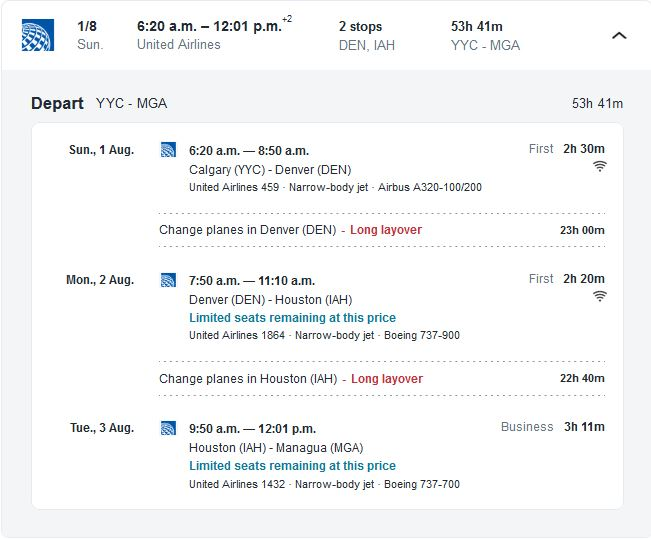
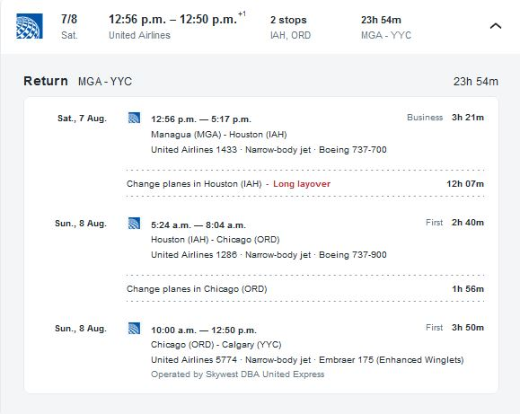
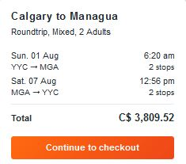
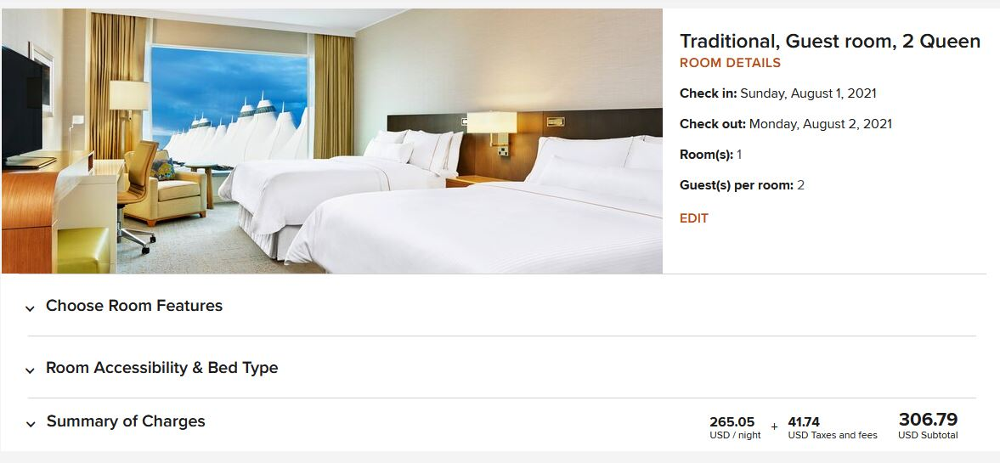
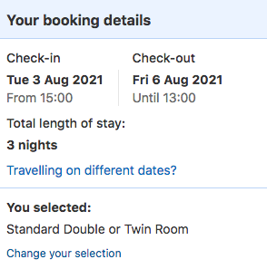
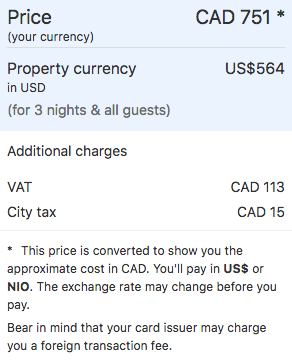
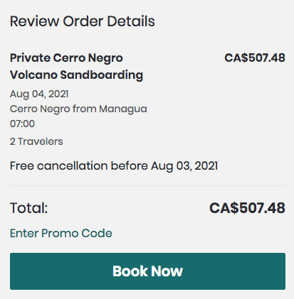
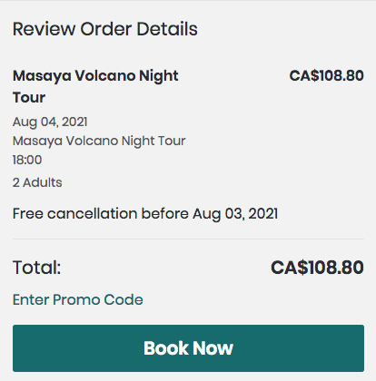

Have you ever wanted to go to Nicaragua?
This nation was probably not on the top of your mind, especially since Central America has other countries to offer, like Costa Rica or Mexico. Nicaragua offers mindblowing views, great hikes, and even volcano boarding! Today, I will be showing you my complete 4-day vacation plan to Nicaragua and its budget, with calculations and the like. Oh, and you will be able to calculate yours too. Bring your notebook and pencil for the ride!
(Also, Nicaragua will have the same time as us Calgarians during the majority of the year. Don't expect any jetlag!)
Because taking a cruise to central America is NOT an option, John Doe and I will be using the next best option to go to Nicaragua with: first-class seats on an airplane!

The layovers are a bit long, but they don't have to be tedious. In Denver, I booked a hotel (more information on that in the Accomodations section), and I have friends at Houston to kill time until the next flight. As for the return trip:

Going home will be much quicker. Again, the Houston - Chicago layover seems a wee bit too long, but the friends from earlier should still exist from earlier, right?
What about the numbers, I hear you ask.
All of this comes to a grand total of:

$3809.52. That's quite a lot for flying two people to and from Nicaragua. At least there's somewhat of a guarantee that it's going to be comfortable, given that the flights booked are either in first or business class.
Now, if I were to split the flight bill with John Doe, we would have to pay $1904.76 each. $1904.76 might sound like a lot per person, and it is. I forgot what point I was going to put in here. Oh well. Let's talk about accommodations now. I never knew how boring it is to book flights!
John Doe and I will have to stay in TWO hotels in our trip. When going to Nicaragua, the time in between one flight to the next is nearly a day for both stops. John Doe and I could stay with my contacts in Houston, but we would have to get a hotel at Denver. I decided to choose The Westin Denver International Airport hotel. It's just a few terminals away from the airport, so it would be an ideal place to stay the day. We booked a traditional guest room with two queen beds.

Because the price is in USD, converting into CAD will make it cost $408.09 (as of October 4th, 2020). Splitting the bill with my friend John Doe makes both of us owe $204.045 each. (Triple digits might be cool, but they unfortunately don't make much of an appearance here.)
As for the second hotel, we will be staying in the Real Intercontinental Metrocentro Hotel in Managua. It's a 4-star hotel with 3 notable restaurants near it (of which we'll talk about in the Foods section), great breakfast, and really just a great place.



The price of the booking, exchanged into CAD as of October the 4th, 2020, is $747.51 (yes, I converted the price myself to reflect the current day). This means it costs $249.17 per day. If I were to split the bill with John Doe, we would owe $373.355 each.
Hotel bookings too are boring. What about activities?
This majority of the vacation is supposed to be relaxing. Why else would I spend thousands on plane tickets and hotels? Then, we have the part of the vacation where we hike up a volcano and go boarding down. That's right, in Nicaragua, there's a volcano you can sled down from. The volcano, which is quite young, is called the Cerro Negro.

John Doe and I will be taking an organized tour to do this bizarre event. This will happen on the 4th of August (which is the second day of the vacation).

The price of this tour is $507.48, and splitting it in half makes John Doe and I owe $253.74 each. You might argue that is a lot of money, but think about what you become granted afterwards, like bragging rights, and a free trip to a restaurant (food payed at your additional expense).
Now, the last planned activity in the vacation (apart the last day reflection period) is yet another volcano-themed one! It's a night tour of the Masaya volcano, which is solely based on photogenic looks and history. What else can you ask for?


This costs $108.56 (way more economical than the last one!), and splitting it 50/50 with John Doe makes it cost $54.28 per person. Don't forget to bring your camera here!
Together, it costs $308.02 per person, and $616.04 for both John Doe and me. That covers activites.
Unless you want to go on a food-free vacation, arranging matters regarding food is a must whether you like it or not. I would make a chart to represent this data, but in fear of being called lazy, here is what I'm going to eat from the first to the last day. Bon appetit!
Breakfast: This is NOT part of the vacation, but John Doe and I will be eating in the plane. We will be eating brioche apple soufflé with vanilla cream sauce, mixed berry sauce and chicken sausage, served with fruit, yogurt and breakfast breads. If you looked at the transportation images, you would see that John Doe and I would arrive at Nicaragua at 12:01 PM CST / MST (daylight savings)
Lunch: After settling around in the hotel, we will then proceed to go to the Market restaurant nearby the hotel, and eat a meal with a burger somewhere in it. The prices have NOT been recorded anywhere in the web, so I averaged out their price range of $9 - $32 and settled at a price of $20.50.
Dinner: We will then eat dinner at yet another restaurant nearby the hotel called Factory Steak & Lobster. I will try out a steak there. Again, the prices are not listed anywhere, so I averaged out their price range of $20 - $50 and settled at a price of $35.
I won't eat any snacks on Day 1.
Adding up the averaged prices, John Doe and I will have spent $55.50 on Day 1 if we split the bill. Else, one of us would have to pay $110.
Breakfast: We will head to the Market restaurant and eat a meal consisting with pizza at the very least. Pizza isn't generally something you would eat at breakfast, but I will have to keep some of the leftovers to eat while going to Leon to see Cerro Negro. As per Day 1, I averaged out their price range of $9 - $32 and settled at a price of $20.50.
Lunch: We will be eating at a restaurant somewhere in the Colonial City section of Leon. Because of the lack of data, I will be using a site's estimate of a 3-star 3-course meal for 2 people of $31.82, and I will divide it by 2 to get the price of this eating session, which will be $15.91.
Dinner: We will be eating sushi at the NAU Sushi Lounge nearby the hotel. Prices for the items there are yet again not shown, so I averaged out their price range of $4 - $80 and settled at a price of $42.
Snacks: The snacks are the leftovers from breakfast. They were already purchased, so no additional fees are to be added.
Adding up the averaged prices, John Doe and I will have spent $78.41 each if we split the bill. Else, one of us would have to pay $156.82.
Breakfast: We will eat at the banquethall of the hotel. The breakfast is complimentary.
Lunch: We will eat at Factory Steak & Lobster and will try out the seafood. As per Day 1, I averaged out their price range of $20 - $50 and settled at a price of $35.
Dinner: We will eat at the NAU Sushi Lounge yet again. As per Day 2, I averaged out their price range of $4 - $80 and settled at a price of $42.
Snacks: Eat leftover sushi while going to the Masaya volcano night tour if hunger requires. No additional expense.
Adding up the averaged prices, John Doe and I will have spent $77 each if we split the bill. Else, on of us would have to pay $154.
Whole day: As a day of reflecting and enjoying the last 24 hours of being in Nicaragua, no going to restaurants. Dining will happen in the banquethall of the hotel. No additional fees. No snacks.
Next day breakfast: As 96 hours since arriving at Nicaragua passes, we will dine at the banquethall of the hotel, and immediately go to the airport. We will leave by 12:56 PM.
Add all the expenses from all 4 days up and you get $210.91 per person and $421.82 for everyone. Food is expensive.
If we add up everything we spent in the vacation, we would amass about $3309.51 per person. That's quite a lot! And that's per person. Doubling it up gives us $6619.02. Either way, I think it's worth it for a mostly relaxing vacation. Also, I realized that making an entry of mathematicalTraveler is exhausting. This is my first and last entry to this website. I hope you find this information semi-useful. Bon voyage!
If you want to see the Google Document used to plan out the information, click here.